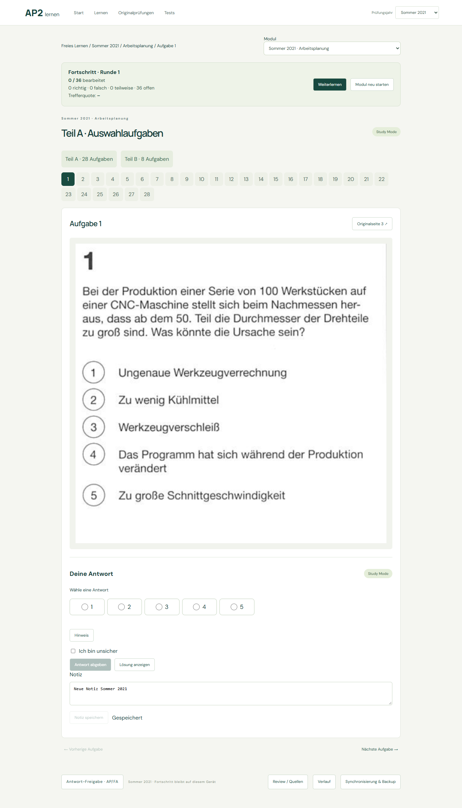
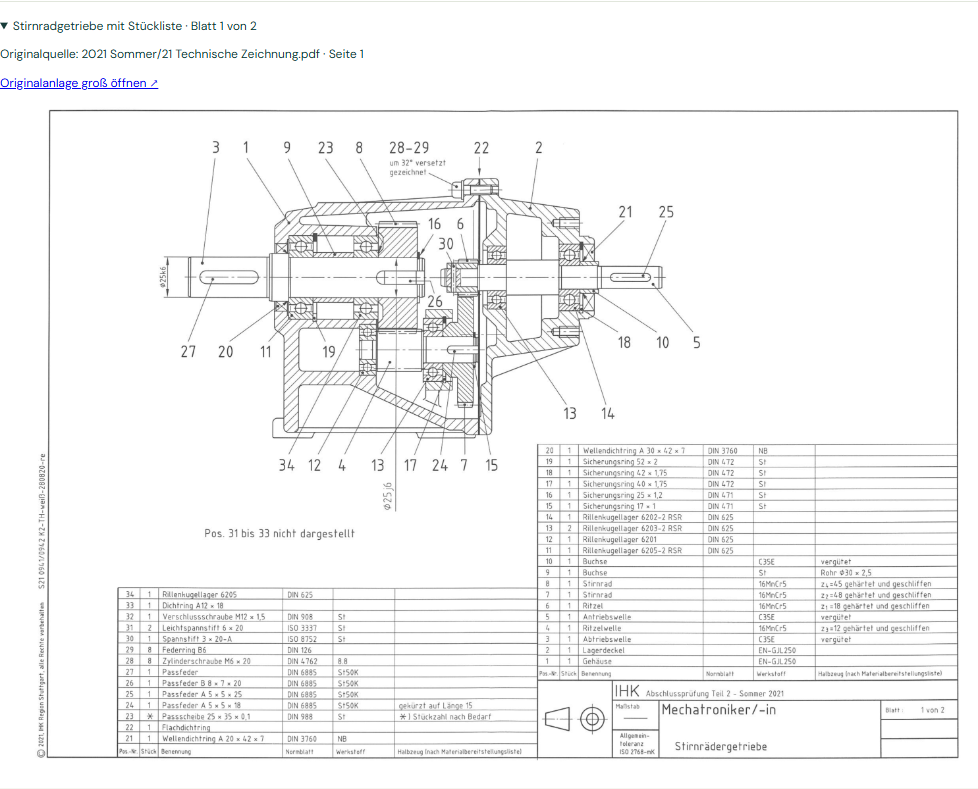
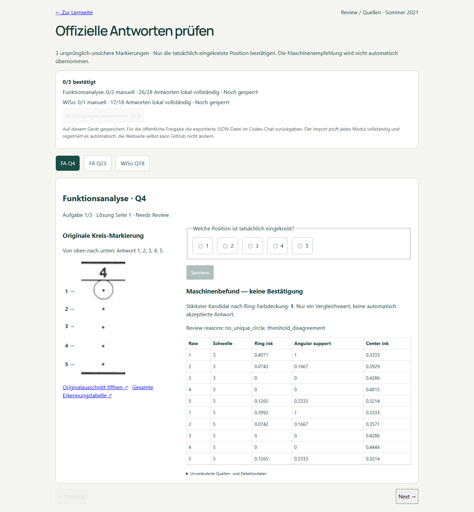
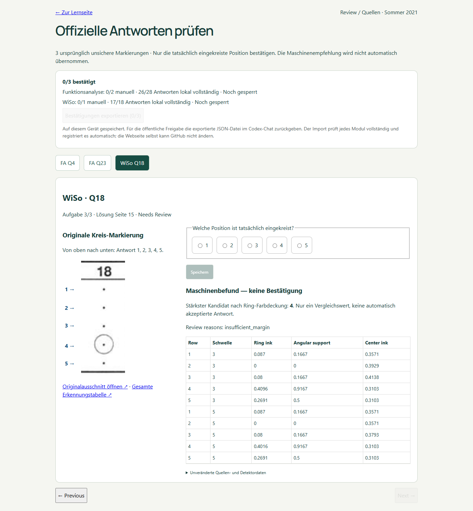
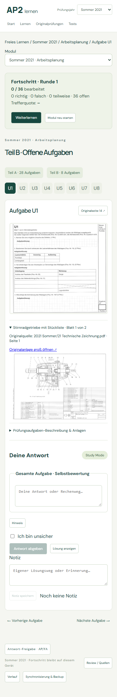

Alle drei Module freigegeben. Manuell bestätigt und gesperrt: FA Q4 = 1, FA Q23 = 2, WiSo Q18 = 4.
Ursprüngliche Quellenprüfung → · Arbeitsplanung lernen →
| Modul / vollständige Galerie | Aufgaben | MC sicher | U Lösungen | Status | Review |
|---|---|---|---|---|---|
| Arbeitsplanung | 36 | 28/28 | 8 | production | — |
| Funktionsanalyse | 36 | 28/28 | 8 | production | — |
| WiSo | 24 | 18/18 | 6 | production | — |
87 neue Seiten gerendert ·0 alte PDF-Scans · bestehende Profile wiederverwendet ·12 Schritte beim Wiederholen übersprungen.
Jede Modulgalerie enthält alle Originalaufgaben, sämtliche Seiten mit Regionszuordnung, offizielle Lösungsausschnitte und den Antworttabellen-Overlay.
Integrität / Wiederaufnahme · Lernen / Prüfung / Jahrfilter · Fortschritt / Notizen / Review
Bestätigung / Integrität · Drei Module: Browser-Abnahme nach Freigabe




